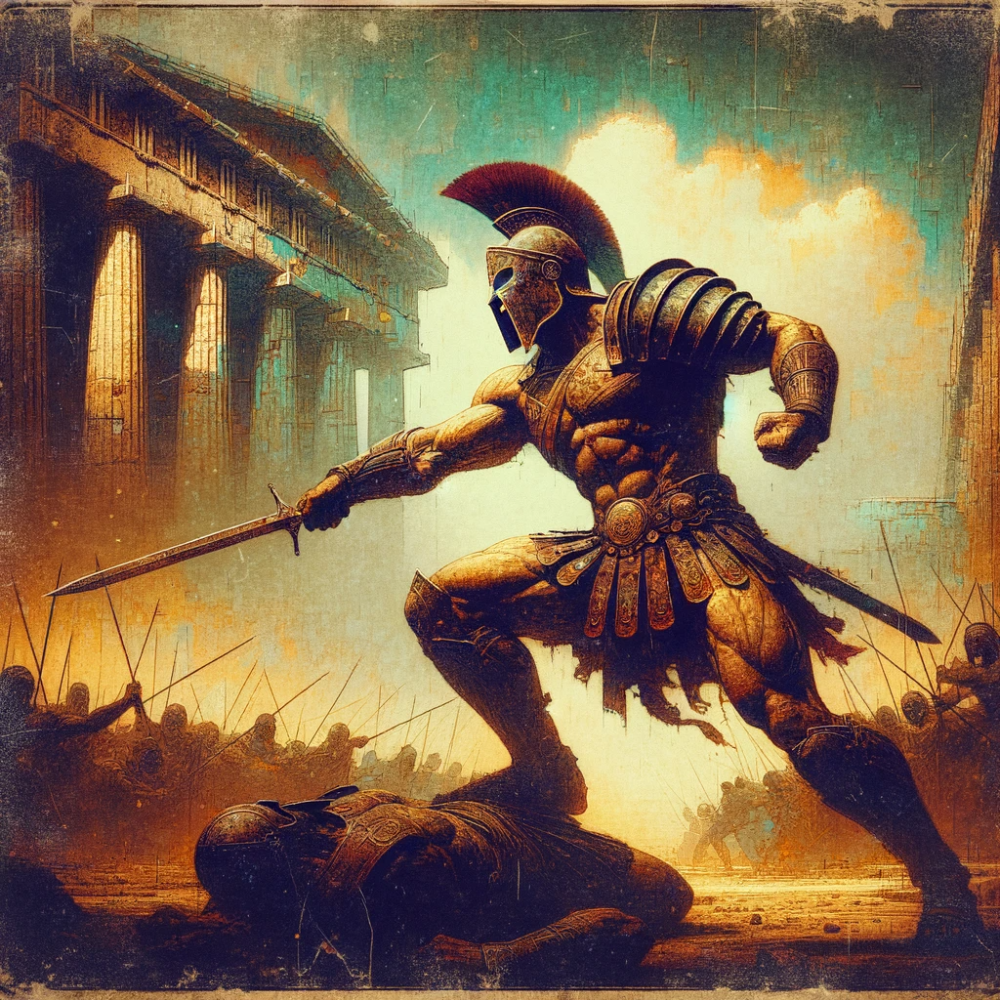

Description
The Gladiator class is a warrior who has honed their skills through years of combat and bloodshed in the arena. They are fierce fighters who are feared and respected by all who cross their path.
Hit Points
- Hit Die: 1d12 per Gladiator Level
- Hit Points at 1st Level: 12 + Constitution Modifier
- Hit Points at Higher Levels: 1d12 + Constitution Modifier per Gladiator Level after 1st
Proficiencies
- Armor: Light Armor, Medium Armor, Shields
- Weapons: Simple Weapons, Martial Weapons
- Tools: None
- Saving Throws: Strength, Constitution
- Skills: Choose two: Animal Handling, Athletics, Intimidation, Nature, Perception, and Survival
Starting Equipment
Lvl 1: Arena Training
- Dual Wielding (Improvisation): The Gladiator has trained in the use of two weapons, allowing them to make two attacks per round.
- Adrenaline Surge (Action): The Gladiator can enter a rage in battle, gaining a +2 bonus to attack rolls and dealing an extra 1d6 damage on their next attacks. Last 5 turns. Rage ups by 1d6 per Gladiator level. Can be used 3 times per short rest.
Lvl 2: Battle-Hardened
- Battle Cry (Bonus Action): The Gladiator can unleash a battle cry, inspiring their allies and intimidating their enemies. Allies within 30 feet gain a +2 bonus to attack rolls, while enemies within 30 feet have a -2 penalty to attack rolls. Can be used 3 times per long rest.
- Shield Bash (Bonus Action): The Gladiator can use their shield as a weapon, dealing an extra 1d6 damage on their next attack.
Lvl 3: Weapon Master
- Improved Dual Wielding (Improvisation): The Gladiator has honed their skills with two weapons, allowing them to make three attacks per round.
- Weapon Specialization (Improvisation): The Gladiator can choose one weapon group to specialize in, gaining a +2 bonus to attack rolls with that weapon and an additional 2d6 to that weapon’s damage.
- Disarming Strike (Bonus Action): The Gladiator can disarm their opponent, forcing them to drop their weapon and giving the Gladiator a +2 bonus to their next attack. Range 10ft. Can be used once per short rest.
Lvl 4: Gladiator Champion
- Whirlwind Attack (Bonus Action): The Gladiator can make a whirlwind attack, hitting all enemies within a 10-foot radius for an extra 2d6 damage. Can be used once per short rest.
Lvl 5: Elite Warrior
- Improved Battle Cry (Improvisation): The Gladiator's battle cry is even more inspiring, giving allies a +4 bonus to attack rolls and enemies a -4 penalty to attack rolls.
- Mighty Blow (Improvisation): The Gladiator can unleash a mighty blow, dealing an extra 3d6 damage on their next attack. Replaces Shield Bash.
Lvl 6: Legend of the Arena
- Master Dual Wielding (Improvisation): The Gladiator can make four attacks per round.
Lvl 7: Slayer of Lords
- Precision Strike (Bonus Action): The Gladiator can make a precise strike, ignoring their opponent's armor and dealing an extra 4d6 damage on their attack. Automatic hit and stacks on top of weapons damage. Can be used once per short rest.
Lvl 8: Hero of the Land
- Improved Whirlwind Attack (Improvisation): The Gladiator's whirlwind attack now deals an extra 4d6 damage to all enemies within a 15-foot radius.
- Intimidating Presence (Action): The Gladiator can intimidate their enemies, causing them to flee in fear and giving the Gladiator a +4 bonus to their next attack. Range 25ft. Enemies must succeed on a DC 12 Constitution saving throw, on fail, the enemies flee and are out of combat for X rounds, where x is half of the rolled result, rounded down. Can be used once per day.
Lvl 9: Champion of the Gods
- Improved Mighty Blow (Improvisation): The Gladiator's Mighty Blow now deals an extra 6d6 damage on their next attack.
- Furious Onslaught (Action):The Gladiator can unleash a furious onslaught, making a number of extra attacks equal to their Strength modifier. Can be used once per long rest.
Lvl 10: God of War
- Divine Fury (Action): The Gladiator can unleash their divine fury, dealing massive damage to all enemies within a 30-foot radius. This attack deals 20d12 damage and has a chance to stun all enemies hit for 1d4 rounds. Each enemy must make a DC 15 Strength saving throw, on fail, the enemies are stunned. Additionally, the Gladiator becomes immune to all forms of damage and negative effects for the duration of the attack. This ability can only be used once every 10 days.